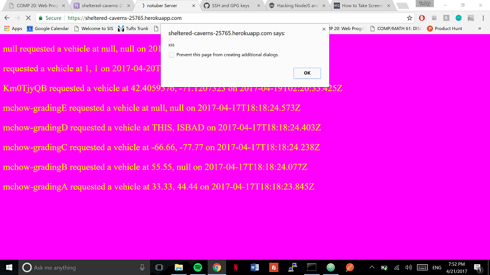
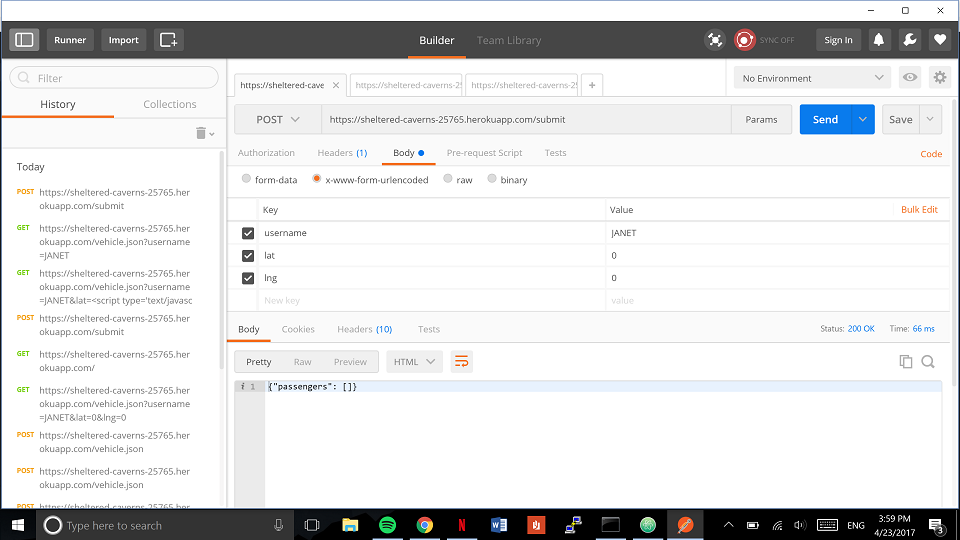
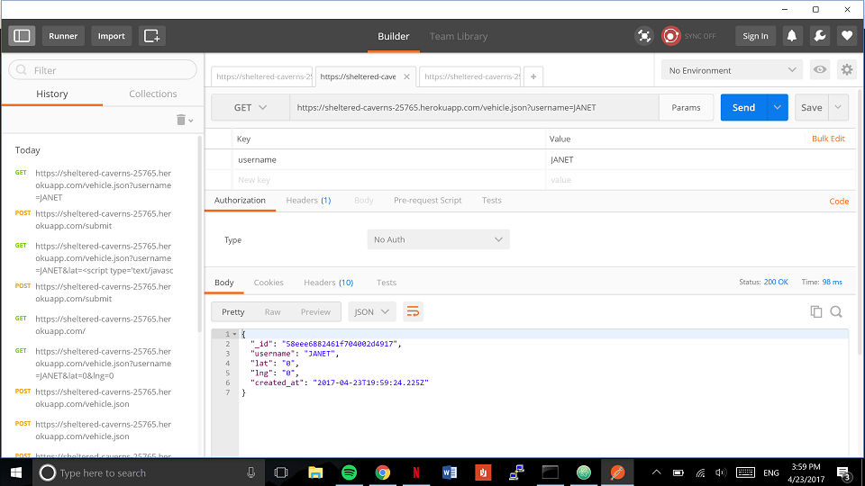
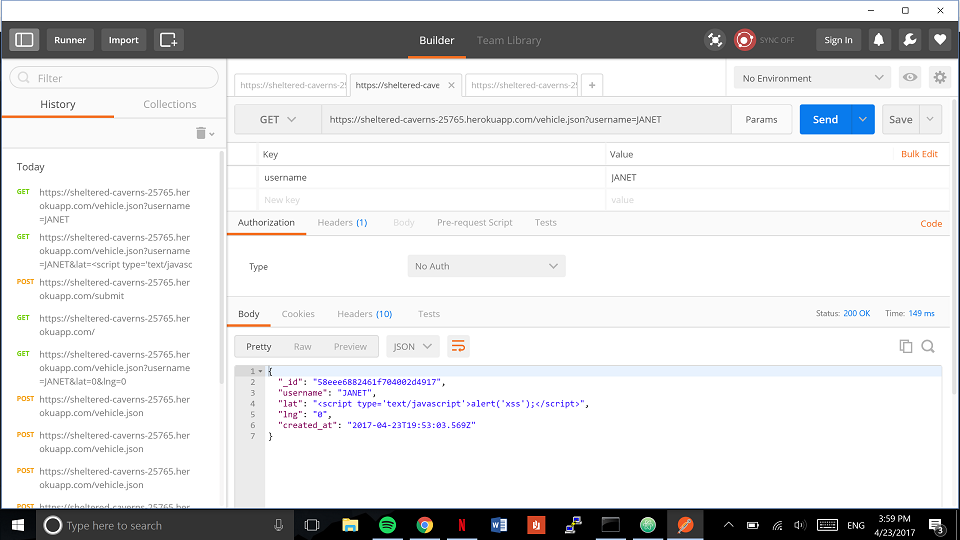

I was hired to test the vulnerabilities to being hacked of the NotUber application, both front and back ends.
I first attempted to infiltrate NotUber with common attacks such as cross-site scripting and injection attack.I then examined the source code of NotUber to try and identify any potential weaknesses that might have been a result of poor programming practices. Finally, after identifying a few areas where I saw potential issues, I went back to attempting to exploit the potential issues I had identified.
The three issues I found most glaring in NotUber were an easily exploitable cross-site scripting vulnerability, which means anyone could run their own javascript code one the browser of all users who tried to use NotUber. Next I found an issue with lack of authentication where any person, once they knew another person's username, could change the location of that user, whether or not the attacker was signed in on the target's account. Lastly, I found a poor programming practice which would cause NotUber to crash for all users if exploited. Any user can currently claim that their latitude or longitude is something other than a number which, when NotUber attempts to render on a map, causes the map to crash!
The issue can be found in the post to /submit path response input index.js of the NotUber server. It is an extremely severe issue, as it would allow an attacker to run any code on the browser of all users who accessed the home path of the NotUber backend app. The issue is that the /submit path does not check for special characters when one sends a query to it. I found it because I suspected such a problem might exist, so I sent a query to /submit with javascript code in the body instead of a username.
This issue could be resolved by removing the special characters from the queries sent to /submit. query = query.replace(/[^\w\s]/gi, ''); would work in the /submit callback for example.
THe issue here is that there is no authentication to ensure that the user who sends a post to /submit is actually the user who is logged into NotUber. This means that once somebody knows another user's username, which isn't generally a secret bit of information, that person might change the location of that username. This issue can be found in the /submit callback at the call to query the database. This is an extremely severe security issue as without any user authentication, any person might not only see another user's location, but even change it in the NotUber database without needing anything but that user's username. I found it by trying to send a submit query using a username I knew already had an account with NotUber, and seeing whether the location would be changed in the database.
 This issue could be resolved by implementing an encrypted password for each user. That way NotUber could ensure that the user sending location information to the server is indeed the user with permssion to do so.
The issue here is that when a submit query is sent to the NotUber server, there is no authentication to ensure that the latitude and longitude are numbers. This error can be found in the /submit callback in the NotUber server. This is an issue of medium severity, as it will crash NotUber for all users attempting to use it, however it will not give an attacker access to personal information or anything of that nature. I found this issue while searching for cross site scripting vulnerabilities when I submitted a script in the latitude query of a user, and it was submitted to the database as the latitude for that user.
This issue could be resolved by using the javascript parseFloat method and ensuring that it correctly parsed the query string into a floating point number before entering that number into the database. var a = parseFloat("10.1") returns 10.1. The method also works to parse whole numbers into floats.
Moving forward with future versions of NotUber I would suggest that the developers become extremely weary of user inputs, and to never trust that the user will input the queries that would make the app run correctly. I would recommend that a team of developers take the time to comb the callbacks in the backend of NotUber to ensure that any queries where a user might attack the data or functionality of NotUber is prevented. While this may slow the further development of NotUber, it would be exponentially useful as currently the app is vulnerable to a massive security breach.
Material on injection attacks on mongodb: http://blog.websecurify.com/2014/08/hacking-nodejs-and-mongodb.html Material on XSS: https://en.wikipedia.org/wiki/Cross-site_scripting Collaborated on security issues with Jonah Feldman